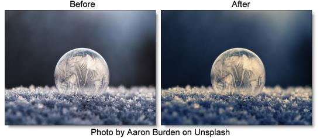

Split Tone
Description
Shadows, midtones and highlights can be individually tinted with the Split tone filter.
Category
Grads/Tints.
Controls
Shadows
Opacity
Set the opacity of the tint color.
Color
The Color parameter sets the color of the shadow tint through the use of a standard color picker.
Position
Selects the shadow values to be adjusted.
Range
Controls the range of values to be used for the shadows. A higher Range value considers more values as shadows.
Midtones
Opacity
Set the opacity of the tint color.
Color
The Color parameter sets the color of the midtone tint through the use of a standard color picker.
Position
Selects the midtone values to be adjusted.
Range
Controls the range of values to be used for the midtones. A higher Range value considers more values as midtones.
Highlights
Opacity
Set the opacity of the tint color.
Color
The Color parameter sets the color of the highlight tint through the use of a standard color picker.
Position
Selects the highlight values to be adjusted.
Range
Controls the range of values to be used for the highlights. A higher Range value considers more values as highlights.
Go to the
Matte section of Common Filter Controls to see how the Position and Range controls work.
Preserve Highlights
Preserves the white areas of the image.
Exposure Compensation
Exposure Compensation adds back the brightness loss as a result of the tinting.